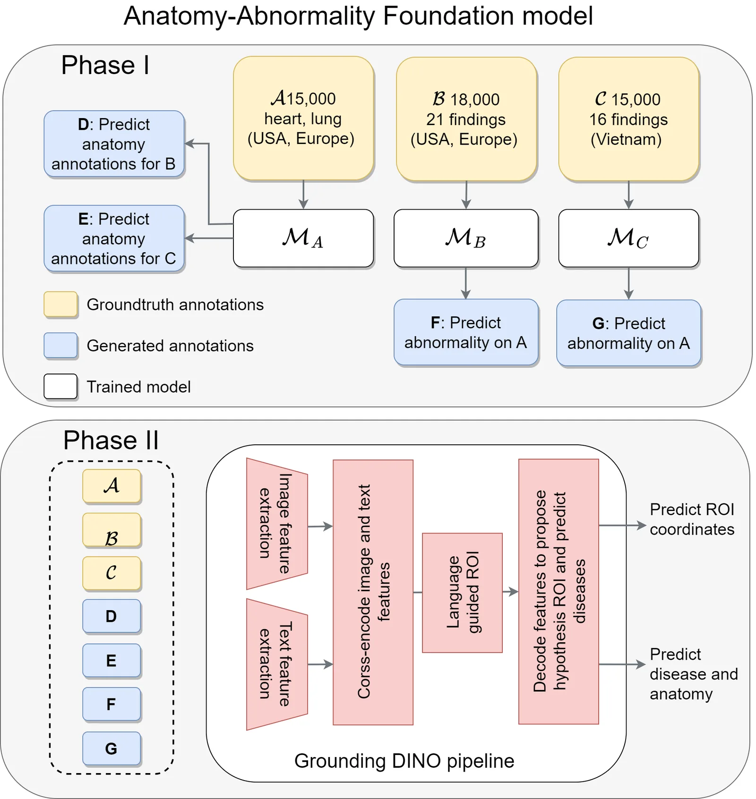
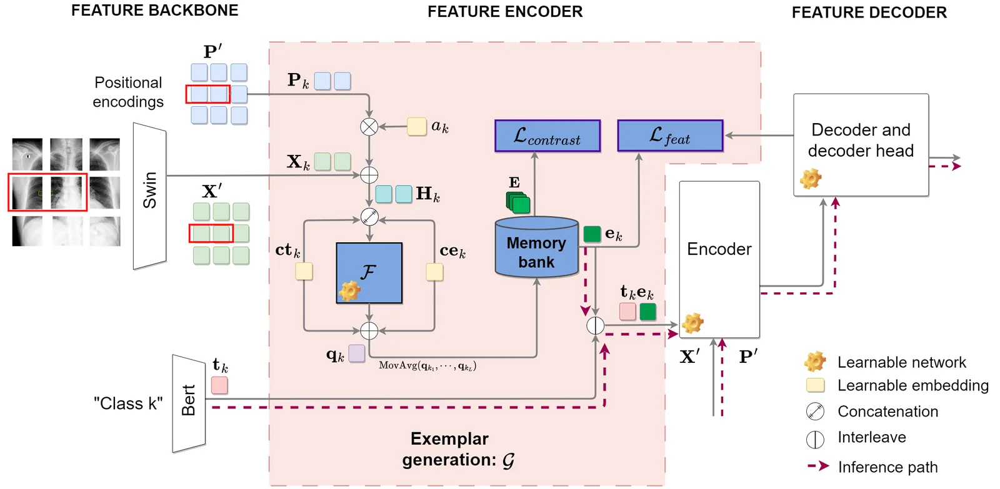
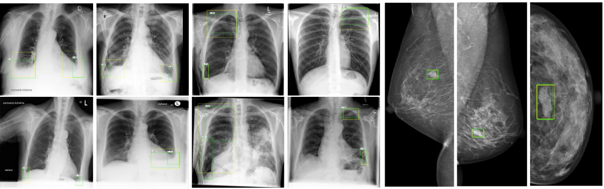
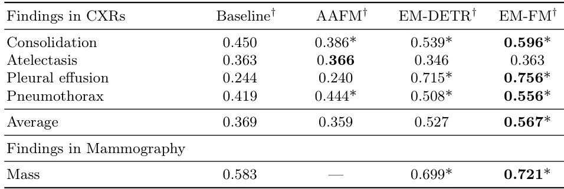

O problema da fragmentação de dados médicos
Sistemas de Diagnóstico Assistido por Computador (CAD) baseados em Deep Learning têm mostrado grande promessa, mas sua eficácia depende criticamente da disponibilidade de grandes conjuntos de dados bem anotados. No domínio da detecção de lesões médicas, a escassez de anotações abrangentes e padronizadas, somada à heterogeneidade dos datasets existentes, limita severamente o desenvolvimento de modelos fundamentais (foundation models) robustos.
Muitas abordagens tradicionais tentam treinar detectores combinando múltiplos datasets não sobrepostos. No entanto, essa combinação ingênua frequentemente resulta em 'esquecimento catastrófico' (catastrophic forgetting), onde o modelo perde a capacidade de aprender características de classes anteriores ao ser exposto a novas. Isso degrada significativamente o desempenho tanto na classificação quanto na detecção.
No domínio de imagens naturais, técnicas de pseudo-labeling têm sido usadas para unificar espaços de rótulos. Contudo, em imagens médicas, especialmente Raios-X (CXRs), os desafios são distintos. As categorias anatômicas e de anormalidades são inerentemente não sobrepostas, mas compartilham características visuais similares, levando a interferência potencial durante o treinamento. Isso limita a aplicabilidade direta de métodos convencionais de pré-treinamento e pseudo-labeling.

Da base GDINO ao EM-FM
O ponto de partida deste trabalho é o Grounding DINO (GDINO), um detector de objetos de vocabulário aberto que alinha características locais da imagem com expressões textuais semânticas. O GDINO constrói sobre o framework GLIP, utilizando informações de 'grounding' (ancoragem) para inicializar o treinamento do decodetor de detecção. Ele aprende representações semanticamente ricas, permitindo a detecção via consultas baseadas em texto, alcançado através de aprendizado contrastivo entre regiões de imagem e embeddings de modelos fundamentais.
Para aproximar esse nível de performance no domínio médico, os autores inicialmente exploraram a integração de anotações anatômicas e de anormalidades de CXRs em um único conjunto de treinamento. O objetivo era verificar se o aumento do número de anotações médicas melhoraria a capacidade do codificador-decodetor de identificar características clinicamente importantes. No entanto, devido à esparsidade de anotações específicas de classe e ao desbalanceamento, a simples combinação de datasets resultou em esquecimento catastrófico.
Para contornar isso, a proposta introduz o EM-FM (Example-Based Foundation Model), que adapta o framework EM-DETR previamente proposto pelos autores. O EM-DETR utiliza embeddings de exemplo (exemplar feature embeddings) gerados para cada classe, que são entrelaçados com embeddings de texto. O codificador e decodetor de detecção realizam atenção cruzada entre a imagem e esses embeddings entrelaçados, treinando o decodetor para buscar classes baseadas em exemplos visuais específicos, não apenas em texto genérico.
Estratégia Aluno-Professor para unificar rótulos
A inovação central reside na estratégia de treinamento aluno-professor, adaptada de Zhao et al., para combinar efetivamente datasets de anatomia e anormalidades. Inicialmente, modelos individuais (MA, MB, MC) são treinados em seus respectivos datasets A, B e C usando rótulos específicos do domínio. Esses modelos servem então como 'professores' para gerar pseudo-anotações para classes ausentes nos outros datasets.
Especificamente, para cada dataset D, os modelos professores treinados em datasets não-D (D') predizem anotações para classes ausentes em D. Predições com escores de confiança acima de um limiar específico por classe (τc) são retidas como anotações fracas (weak annotations). Esse limiar é definido para atingir 95% de sensibilidade na Curva Característica de Operação do Receptor (ROC) para cada classe c.
Por exemplo, o modelo MC, treinado no dataset C, prediz as 16 anormalidades no dataset A, bem como anormalidades não sobrepostas no dataset B. Esse processo se repete até que todos os datasets contenham anotações para todas as classes, efetivamente unificando o espaço de rótulos. Para predições de anatomia, seleciona-se a melhor predição por imagem e classe, sem aplicação de limiar de confiança inicial, mas filtrando por tamanho e localização da bounding box para excluir erros grossos de IoU (Intersection-Over-Union).

Treinamento do Modelo de Fundação Anatômica-Anormalidade (AAFM)
Com o espaço de rótulos unificado, um modelo de fundação é treinado usando a combinação de todas as anotações, tanto as originais (gold-standard) quanto as geradas (weak). Este modelo é denominado Modelo de Fundação Anatômica-Anormalidade (AAFM). Este passo é crucial, pois prepara o modelo para lidar com a complexidade de detectar tanto estruturas normais quanto patologias, mitigando o esquecimento que ocorreria com um treinamento joint ingênuo.
Em seguida, os autores incorporam anotações de outros domínios, como mamografia, que podem compartilhar rótulos textuais similares, mas diferem visualmente. Eles utilizam o método baseado em exemplos EM-DETR para treinar um segundo modelo de fundação, o EM-FM. A integração de embeddings de exemplo permite que o modelo capture nuances visuais finas de cada classe, indo além da simples correspondência textual.
O treinamento final do EM-FM ocorre em duas fases. Na primeira, o AAFM é refinado. Na segunda, o EM-DETR é treinado sobre os dados unificados. A arquitetura Swin-L é usada como backbone, com tamanho de lote de 1 por GPU (em um node com quatro A100 de 40GB). O learning rate foi ajustado para 0.0008. Aumentos de dados padrão de CXR, como contraste automático e flip horizontal, foram aplicados, além de termos de texto específicos como 'right lung' e 'left lung' para distinguir categorias laterais.
Resultados: Superação do SOTA em CXRs e Mamografia
Os experimentos avaliaram o desempenho em quatro achados principais de CXRs e massas em mamografia. A Tabela 3 mostra que o EM-FM alcançou ganhos substanciais e estatisticamente significativos em relação ao baseline GDINO. Para CXRs, houve aumentos de 14,6 pontos percentuais em consolidação, 51,2 pontos em derrame pleural (pleural effusion) e 13,7 pontos em pneumotórax, resultando em um aumento médio de 19,9 pontos percentuais no mAP50 (0,567 vs 0,369).
Comparado ao EM-DETR treinado em um único dataset, o EM-FM melhorou o mAP50 em 2 a 6 pontos percentuais através desses achados. Na mamografia, o EM-FM superou o EM-DETR em 2,2 pontos percentuais. Além disso, o EM-FM superou o baseline em termos de AUC em nível de imagem, com ganhos estatisticamente significativos de 1 ponto percentual na média para os quatro achados principais de CXRs.
É importante notar que o produto comercial de referência (RPS), baseado em ResNet-101 FCOS, beneficia-se de pré-treinamento em 100 milhões de imagens e uso de Non-Maximum Suppression (NMS). O EM-FM, embora não use NMS pós-processamento da mesma forma, compete de maneira competitiva, demonstrando a eficácia da abordagem de foundation model sem necessidade de pré-treinamento massivo em imagens naturais.

Limitações e Ambiguidade Clínica
Apesar dos ganhos gerais, o modelo apresentou limitações em certas classes. As melhorias limitadas na detecção de atelectasia são atribuídas à ambiguidade inerente do rótulo, decorrente da sobreposição clínica com condições como consolidação e distelectasia. Essas condições frequentemente compartilham características radiológicas similares e podem representar estágios diferentes de um mesmo espectro patológico, levando a anotações groundtruth ruidosas ou inconsistentes entre datasets.
Embora o AAFM tenha tido desempenho inferior na atelectasia e no derrame pleural em comparação com o baseline, essas diferenças não foram estatisticamente significativas. Essa lacuna pode ser atribuída aos limiares de confiança otimizados para classificação no treinamento aluno-professor e à variabilidade no aprendizado contrastivo do GDINO, que depende das classes escolhidas para avaliação.
Além disso, a estratégia de geração de pseudo-anotações, embora eficaz, introduz ruído potencial. O filtro de 95% de sensibilidade no ROC ajuda a controlar isso, mas predições incorretas de baixa confiança ainda podem ser incluídas se não forem filtradas adequadamente por tamanho ou localização, como discutido no método. A generalização para outras modalidades além de CXR e mamografia ainda precisa ser validada.

Conclusão e Perspectivas
Este estudo demonstra que a criação de um modelo de detecção de fundação para todas as imagens de radiografia é viável. A combinação de datasets disjuntos e sobrepostos de anatomia e anormalidades, protegida pela estratégia aluno-professor, alcançou desempenho SOTA em classificação e melhorou significativamente a detecção. O EM-FM prova que é possível integrar dados heterogêneos mantendo a robustez.
A abordagem também facilitou uma convergência de treinamento mais rápida e estável, um benefício comum em modelos fundamentais. Trabalhos futuros estenderão essa abordagem para outros achados e datasets para validar ainda mais a generalização e robustez do EM-FM. Para desenvolvedores e pesquisadores, o principal takeaway é a viabilidade de unificar espaços de rótulos médicos fragmentados sem sacrificar o desempenho de detecção, desde que se gerencie cuidadosamente o esquecimento catastrófico.
O que fica
- O EM-FM integra datasets de anatomia e anormalidades usando uma estratégia aluno-professor para gerar anotações fracas, evitando o esquecimento catastrófico.
- A abordagem supera o baseline GDINO e o EM-DETR original, alcançando SOTA em mAP50 para raio-X e mamografia.
- O modelo demonstra que a unificação de espaços de rótulos distintos é viável e benéfica para a detecção de lesões em imagens médicas.
Paper original: Toward Foundation Detection Models via Example-Based Grounding in EM-DETR
Comentários
Nenhum comentário ainda. Seja o primeiro.